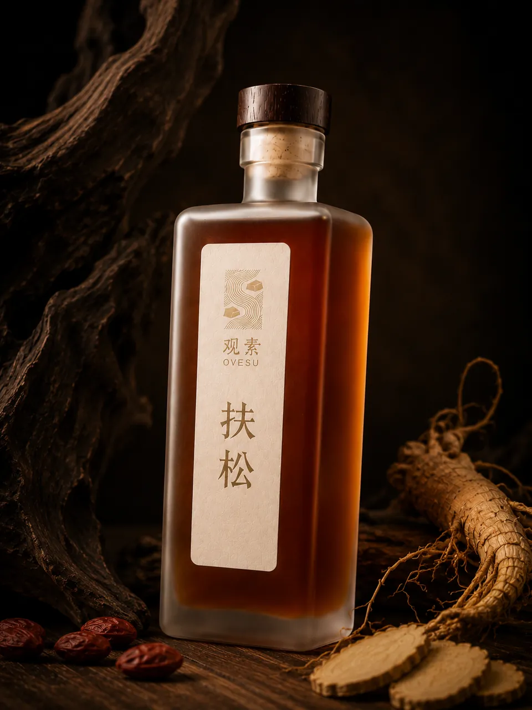
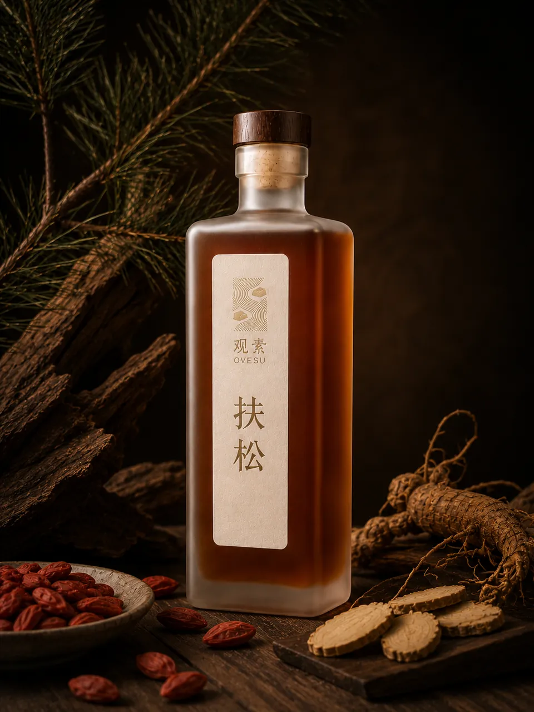
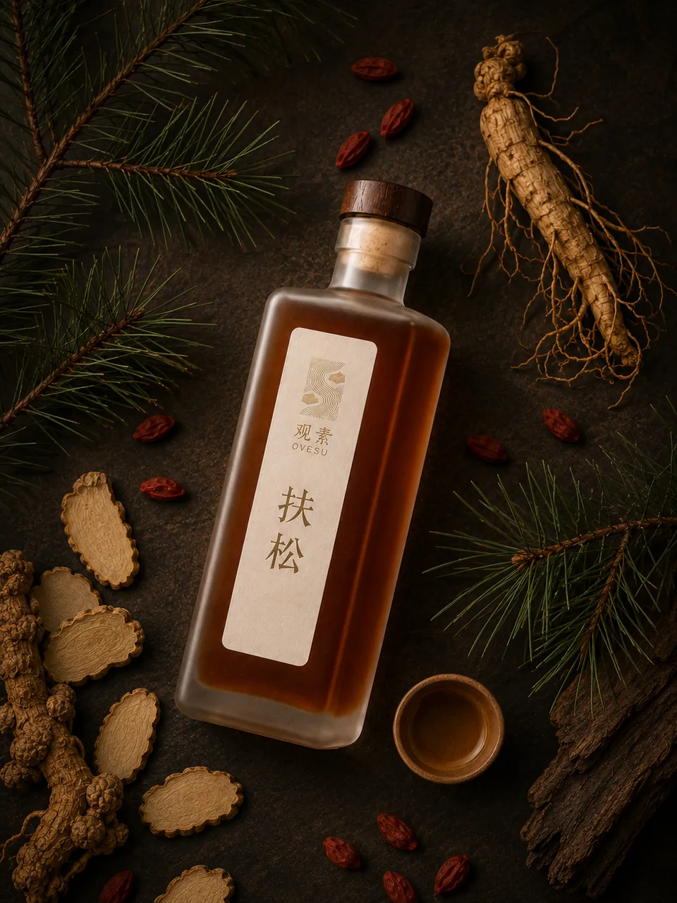
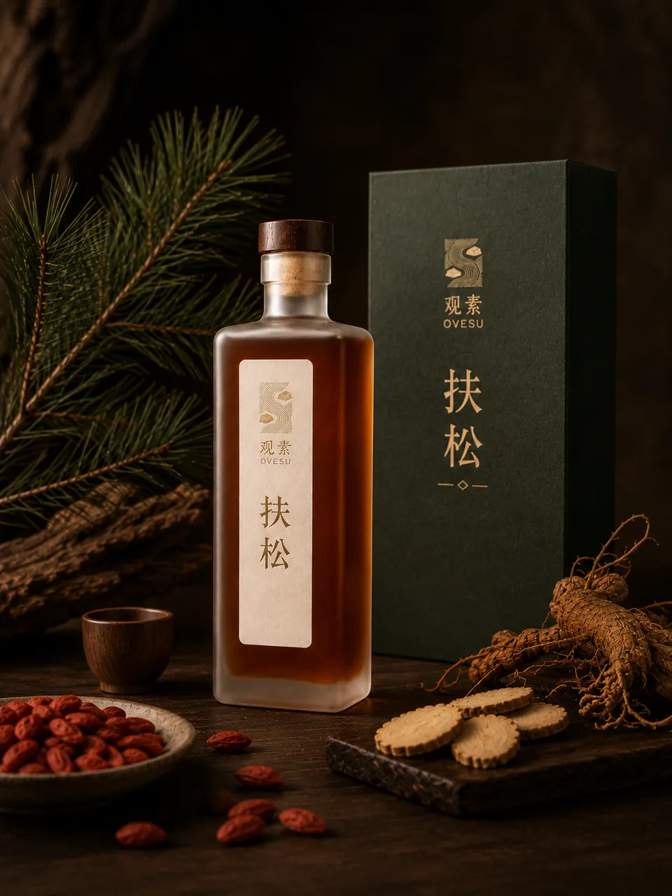
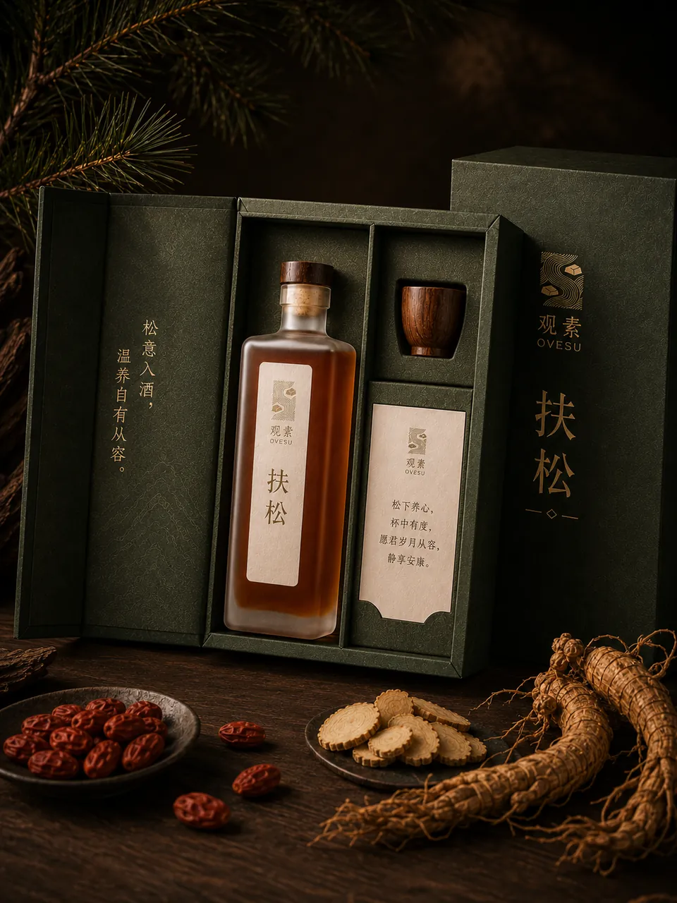
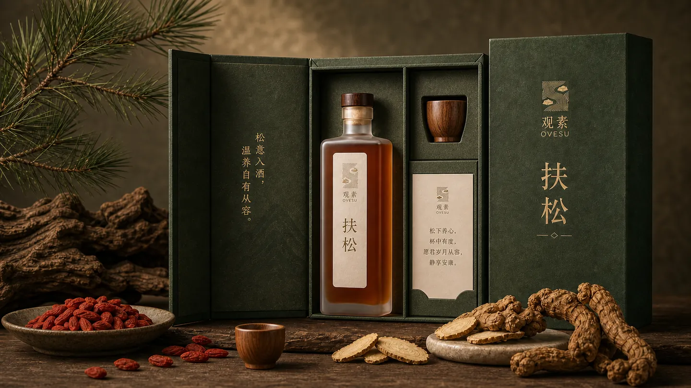

杜仲黄精酒
扶松
像松木、土地与岁月一起沉下来的一杯温润之酒。
扶松写给父母与长辈。杜仲带来山林、树木与支撑感的联想， 黄精把酒体磨得更温润，枸杞让深色草本酒多一点柔和的人情味。
风味层次木质香与草本香缓缓打开。重点不在于惊艳，而在于踏实。尾段带有谷物与焦糖般的微甜。
草本初衷杜仲定下如松柏般的支撑感，经过九蒸九晒的黄精将酒体打磨得极其温厚，枸杞则让这份深沉的草本底色多了一丝柔和的人情味。
情绪场景父母与长辈的日常小酌。不催促，不猛烈，像大地托起松柏一般，给身体一份无声而坚韧的支撑。
核心草木杜仲 / 九蒸九晒黄精 / 宁夏枸杞
酒体视觉琥珀木棕，深邃踏实
酒精度15% Vol.
